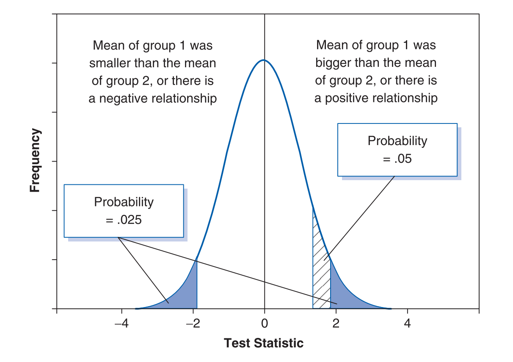

Chapter 2 Statistical Models
2.1 Why do we build statistical models?
- 我們對於 real-world processes 有興趣，但是我們通常無法直接研究 real-world processes，所以我們搜集資料來代表（represent）這個 processes，並運用這些資料來建立 statistical models。
- 我們將 real-world processes 合理地簡化成一個能夠代表它的 statistical model
- 社會科學家建立 real-world processes 的模型，希望了解在特定的情況下，這些 processes 會如何運作。
- Population: the collection of units to which we want to generalise a set of findings or a statistical model
- Sample: the small subset of the population
2.2 Assessing the fit of a simple statistical model: the mean
- Fit: the degree to which a statistical model represents the data collected
- Deviance: the error in the model
- Degree of freedom (df): the number of ‘entities’ that are free to vary when estimating some kind of statistical parameter
- The measures of the ‘fit’
- Sum of squared errors \[SS=\Sigma(x_i-\overline{x})^2\]
- Variance (\(s^2\)): an estimate of average variability of a set of data
\[s^2 = \frac{SS}{N-1} = \frac{\Sigma(x_i-\overline{x})^2}{N-1}\]
- 為何要除以\(N-1\)？
- 當我們要估計母體變異數/標準差時，會用樣本平均數做為母體平均數的估計，因此母體平均數就被決定了；當平均數被決定時，自由度為「樣本數-1」。
- Standard deviation \[s = \sqrt{\frac{\Sigma(x_i−\overline{x})^2)}{N−1}}\]
2.3 The general equation of (linear) statistical models
\[\text{outcome}_i = (\text{model}) + \text{error}_i\] \[\text{deviation} = \Sigma(\text{observed}-\text{model})^2\]
2.4 Inference from the sample to the population
2.4.1 Standard error
- 從同一個母體抽樣數次，每次抽樣得到的樣本之間會有些差異
- 我們藉由抽樣得到的樣本去推論母體的性質 \(\Longrightarrow\) 了解樣本是否能夠良好地代表母體便很重要！
- Sampling distribution: the frequency distribution of sample statistics (e.g., mean) from the same population
- (e.g.) sampling distribution of sample means 樣本平均數抽樣分佈
- Sampling variation: the extent to which a statistic varies in samples taken from the same population （從相同母體抽樣而來的樣本，其統計值差異的程度）
- Standard error: the standard deviation of the sampling distribution of a statistic
- Standard error of the mean (SE): the standard deviation of sample means
- SE is a measure of how representative a sample is likely to be of the population
- Large SE \(\Rightarrow\) 這些樣本可能不太具有代表性
- Small SE \(\Rightarrow\) 這些樣本可能比較能夠反映母體的性質
- Central limit theorem (CLT)
- 當樣本數\(N\)夠大時（通常以 \(>30\) 為基準），「樣本平均數抽樣分佈」會是平均數為母體平均數 \(\mu\)，標準差（又稱「平均數的標準誤SE」）為 \(\sigma_{\overline{x}}=\frac{\sigma}{\sqrt{N}}\) 的常態分佈。
- 無關乎母體分佈本身是否為常態分佈。
2.4.2 Confidence intervals
- 除了 standard error 之外，另外一個去評估「樣本平均數」做為「母體平均數估計值」的精確性的方法，就是去計算一個我們認為真實的母體平均數的值會落在的一個範圍。
\(\Rightarrow\) Confidence interval: 我們認為母體的真實值所會落在的一個範圍 - Confidence interval 具有一個性質：它會告訴我們這個範圍涵蓋到母體真實值的可能性。
- 95% confidence interval: 我們重複取得樣本估計值很多次，且每次都建立一個 confidence interval，則其中 95% 的 confidence intervals 會涵蓋到母體真實值。
- 如何建立 confidence interval？（以 95% confience interval 為例）
- 在 Z 分佈中（mean = 0, SD = 1），95% 資料的 z-scores 會落在 -1.96 與 1.96 之間。
- 由 CLT 得知，當樣本數夠大時，樣本平均數的抽樣分佈會近似於常態分佈。
- 我們可以藉由\[z = \frac{X-\overline{X}}{SE}\]將資料轉換成 Z 分佈；將 z-scores 的值帶入公式中，就可以求出對應的數值。
- Lower boundary of confidence interval \(= \overline{X}-(1.96 \times \text{SE})\)
- Upper boundary of confidence interval \(= \overline{X}+(1.96 \times \text{SE})\)
- 當 confidence interval 的間距很大時
\(\Rightarrow\) sample mean 可能跟 true mean 差距非常大
\(\Rightarrow\) 代表這個 mean 無法很合適地代表母群 - General form of confidence intervals
(\(p\): the probability value for the confidence interval)- Lower boundary of confidence interval \(=\overline{X}−\bigg(z_{\dfrac{1−p}{2}} \times \text{SE}\bigg)\)
- Upper boundary of confidence interval \(=\overline{X}+\bigg(z_{\dfrac{1−p}{2}} \times \text{SE}\bigg)\)
- General form of confidence intervals when the sample size is small
(\(n\): the degree of freedom)- Lower boundary of confidence interval \(= \overline{X} - (t_{n-1} \times \text{SE})\)
- Upper boundary of confidence interval \(= \overline{X} + (t_{n-1} \times \text{SE})\)
視覺化 confidence intervals（error bars）的好處： 藉由比較樣本間平均數的 confidence intervals，我們可以稍微了解說這些樣本是否來自於同一個母群；當兩者的 confidence intervals 很少重疊時，代表這兩者很可能來自於不同的母群，比較能夠說這兩者有顯著差異。
- Why do we use .05?
- 我們現代使用的假設檢定，其實混合了 Fisher 與 Neyman & Pearson 的方法:
- Fisher’s: using the probability value p as an index of the weight of evidence against a null hypothesis
- Neyman & Pearson’s: testing a null hypothesis against the alternative hypothesis
- 當初 Fisher 出版統計學教科書的時候，為了節省空間，所提供的 critical values table 只包含了 .05, .02, .01 的值。
- 我們現代使用的假設檢定，其實混合了 Fisher 與 Neyman & Pearson 的方法:
2.5 Test statistic（統計檢定量）
- 要測試我們建立的模型是否 fit 所蒐集到的資料，或檢驗我們的假設是否是一個對於資料的良好解釋，我們可以將 systematic variation 拿來跟 unsystematic variation 做比較。 \[\text{test statistic} = \frac{\text{variance explained by the model}}{\text{variance not explained by the model}} = \frac{\text{effect}}{\text{error}}\]
Test statistic 是具有特定性質的統計量，更明確來說，我們通常知道它們的機率分配
\(\Rightarrow\) 因此可以推算出得到特定數值的機率為多少
\(\Rightarrow\) 當我們的模型愈能解釋資料時，test statistic 通常會愈大，得到這樣數值的機率會愈低
\(\Rightarrow\) 當這個機率低到某個程度時（例如 \(<.05\)），我們比較有信心說我們的模型解釋了足夠的資料變異，因此我們的模型能夠反映母體的狀況- What we can and cannot conclude from a significant test statistic?
- The importance of an effect
- 非常小而不重要的效果，在樣本數很大時，仍然有可能顯著。
- 即使結果顯著，不見得表示該結果的效果足夠。
- Non-significant results
- Non-significant results 不表示虛無假設為真，也不表示「沒有效果」。
- Cohen 指出虛無假設不可能為真，因為從抽樣分佈來看，我們知道任兩個隨機樣本通常都會有差異，縱使差異非常非常小。
- Significant results
- Significant results 也不表示虛無假設為錯誤的（因為統計檢定是基於機率推論的概念）。
- 我們只能說，當檢定統計量顯著時，虛無假設為真的機率非常低。
- The importance of an effect
2.6 One- and two-tailed tests
- One-tailed test: a directional hypothesis
- 如果我們的假設是有方向性的，那麼我們只需要比較小的 test statistic 就能夠得到顯著結果（給定 p value 相同的情況下，相較於沒有方向性的假設）。
\(\Rightarrow\) One-tailed test 較 two-tailed test 更有 power
- 如果我們的假設是有方向性的，那麼我們只需要比較小的 test statistic 就能夠得到顯著結果（給定 p value 相同的情況下，相較於沒有方向性的假設）。
- Two-tailed test: a non-directional hypothesis

Figure 2.1: The difference between one- and two-tailed tests
2.7 Type I and Type II errors
- Type I errors: 在母群當中其實沒有這個效果（虛無假設為真），但我們做出來的統計結果卻發現有效果（錯誤拒絕虛無假設）。
- False positive 偽陽性
- \(\alpha - \text{level}\): 犯下 type I errors 的機率（我們自己訂的標準）
- Type II errors: 在母群當中其實有這個效果（虛無假設為偽），但我們做出來的統計結果卻沒有發現效果（錯誤接受虛無假設）。
- False negative 偽陰性
- \(\beta - \text{level}\): 犯下 type II errors 的機率（我們自己訂的標準）
2.8 Effect sizes（效果量）
- 除了了解效果存不存在之外（假設檢定），另外一個重要的議題在於：這個效果本身有多重要？
- Effect size: an objective and (usually) standardised measure of the magnitude of observed effect
- Standardised 的好處：可以比較不同研究中使用的不同變數之間的效果如何。
- 統計分析得到的 effect size，也只是對於母群 effect size 的估計。
- APA 格式手冊建議所有心理學的發表都應該要報告 effect sizes。
- Some measures of effect size
- Cohen’s d
- Pearson’s correlation coefficient r
- Odds ratio
- 要估計母群 effect size，與三個統計性質有關：
- Sample size (要能夠估計母群 effect size 所需的 sample size)
- \(\alpha-\text{level}\)
- Statistical power
2.9 Statistical power（統計檢定力）
- Statistical power: the probability that a given test will find an effect assuming that one exists in the population（假設母群中有效果時，某檢定能夠偵測到那個效果的機率）
- \(1-\beta\)（從 \(\beta\) 的定義出發）
- 正確拒絕虛無假設的機率
- Statistical power 的應用
- 計算檢定的統計檢定力
- 在「實驗」情境下：我們會先決定好 \(\alpha-\text{level}\) 、知道我們的 sample size 有多大，從我們的樣本去估計出一個 effect size；藉由上述這些數值，可以計算出這個檢定的 power。 如果計算出的 power 夠大（通常是 0.8 以上），我們就可以比較有信心說能夠偵測到真正存在的效果；但若 power 偏低，我們或許要用更多的受試者去重複原先的實驗，以提升檢定的 power。
- 計算實驗所需要的 sample size
- 先決定我們要的 \(\alpha-\text{level}\) 與 \(\beta-\text{level}\)（決定了 power），並藉由過去類似的研究估計一個我們希望在實驗中偵測到的 effect size
\(\Rightarrow\)可以估算這個實驗需要的 sample size 有多大
- 先決定我們要的 \(\alpha-\text{level}\) 與 \(\beta-\text{level}\)（決定了 power），並藉由過去類似的研究估計一個我們希望在實驗中偵測到的 effect size
- 計算檢定的統計檢定力